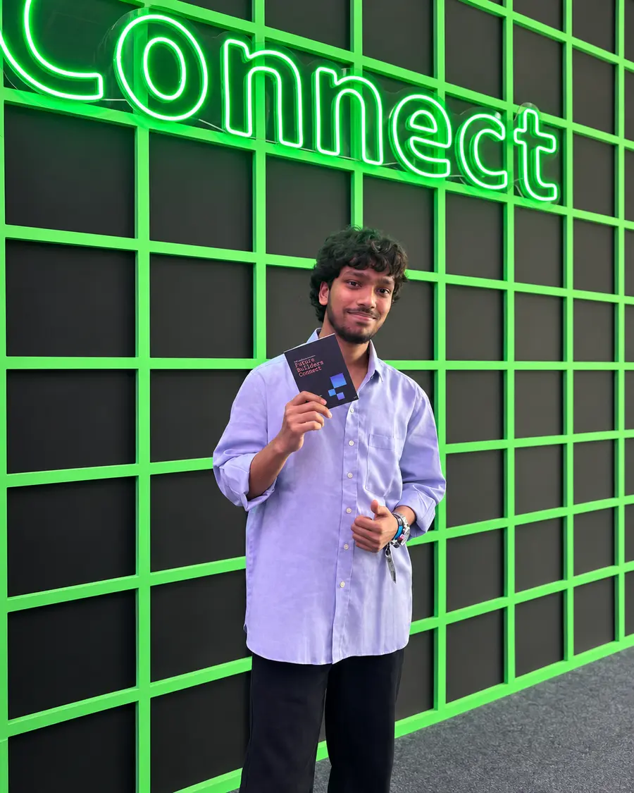

> curiosity.exe
[ OK ] HARDWARE
[ OK ] SOFTWARE
[ .. ] INTELLIGENCE
> scroll_to_explore_
INPUT → PROCESS → POSSIBILITY
01 / INPUTSignals become data.
02 / CONNECTIONData becomes context.
01001 · 11010 · 00101 NODE → EDGE → NETWORK
03 / INTELLIGENCEContext becomes possibility.
SCROLL TO ENTER ↓
01 — COMMAND02 — CONNECTION03 — INTELLIGENCE
000%
01 / SELECTED WORK
Ideas made tangible.
From intelligent agents to accessible technology. A selection of work across software and hardware.
More experiments, source code, and ongoing work. Explore GitHub ↗
SOURCE / PUBLIC REPOSITORIES
An open workbench.
Projects, experiments, and learning repositories. Directory checked on 22 October 2026.
Repository availability does not imply a completed or production-ready application.
02 / THE PERSON BEHIND THE WORK
Curious by nature. Engineer by practice.
PRACHETH SINGHBENGALURU, INDIA
My path started with electrical engineering. Today, I’m studying how to make machines perceive, reason, and help.
I’m Pracheth, a B.E. Artificial Intelligence & Machine Learning student at Dayananda Sagar Academy of Technology and Management in Bengaluru, graduating in 2027.
My interests sit where applied AI meets useful software: memory-augmented agents, computer vision, accessible technology, and reliable backend systems. My electrical engineering background also keeps me close to sensors, robotics, and the physical world.
Tools used in my work, alongside topics I’m studying and exploring.
Explore study topics & experiments +
A record of topics explored, not a complete academic transcript or a claim of proficiency in every tool.
04 / EXPERIENCE
Learning in the real world.
JAN — JUN 2026
Software Engineer Intern
Arohan · Hasprana Health Care Solutions
Supported healthtech platform development and payment-gateway integration. Worked across product, marketing, and HR teams on elder-care and wearable-related services.
Managed domain, cPanel, and deployment infrastructure for a platform using React, Node.js, Python, Docker, and AWS.
SOFTWAREJAN — APR 2024
Electrical Maintenance Intern
Suprajit Automotive Limited · Bengaluru
Assisted with technical documentation and manufacturing process understanding in an industrial environment.
ENGINEERING
05 / FOUNDATION
Education.
2024 — 2027 · EXPECTED
B.E. Artificial Intelligence & Machine Learning
Dayananda Sagar Academy of Technology and Management, Bengaluru
CGPA 8.222021 — 2024
Diploma in Electrical & Electronics Engineering
PES Institute of Technology and Management, Shivamogga
CGPA 8.35Earlier education +
Class XII · State Board, Commerce · 2021 · 79%
Class X · State Board · 2019 · 72.16%
06 / BEYOND THE CODE
Research. Teams. Community.
01 / RESEARCH
AI in education
Co-authored “Literature Survey in AI in Education (AIED),” listed in my résumé as published in a Springer book series. Also co-authored a technical paper on the smart-alert system.
Publication references to be added.
02 / HACKATHON
Healthcare, reimagined
1st Runner-up at the SSCE Healthcare Hackathon for a genotype and drug-interaction analysis system.
Achievement recorded in my résumé.
03 / COLLABORATION
Engineering together
Contributed CNN, image-processing, and Raspberry Pi work to the SEVC autonomous car project, and steering-actuation research with Vulcan Racing Club.
04 / COMMUNITY
Making room for ideas
Event organisation with student and technical communities, including Bridge Ally 4.0 and ALMATRON.

AWS FUTURE BUILDERS CONNECT / BENGALURU
PEOPLE / IDEAS / CONNECTIONS
Beyond the screen.
Attending AWS Future Builders Connect in Bengaluru gave me an opportunity to step beyond coursework and personal projects, exchange ideas, and connect with people who share my interest in technology.
As an AI/ML student, I’m interested in how an idea becomes a usable application. Building a model is one part of that process; deploying it, managing data, and making it accessible to users are equally important. The experience strengthened my interest in cloud computing and its role in bringing AI applications into practical use.
I left with fresh perspectives and more motivation to keep experimenting, improve my engineering skills, and learn from the wider technology community.